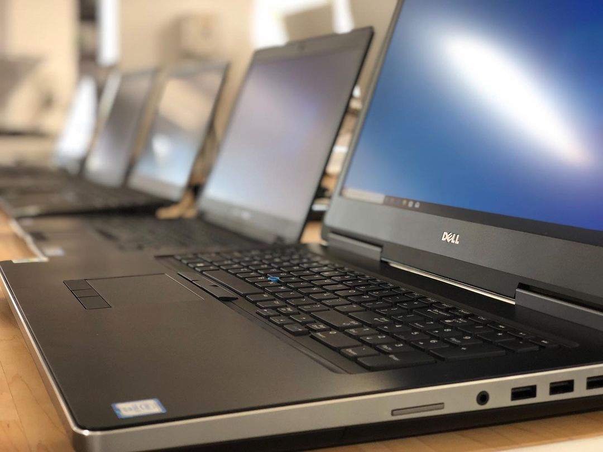
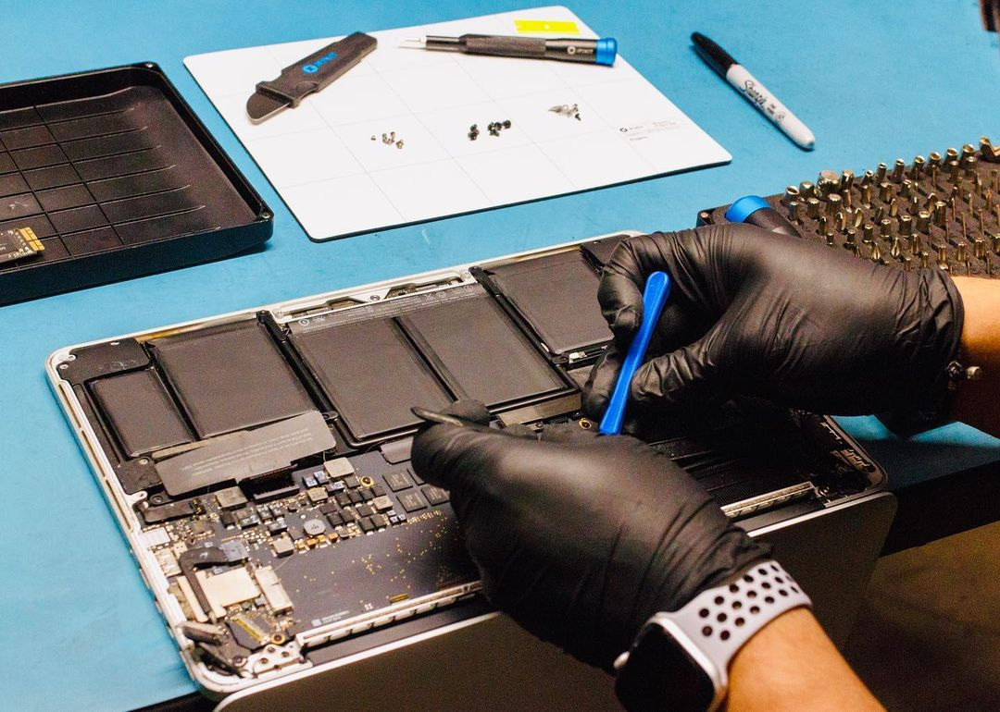
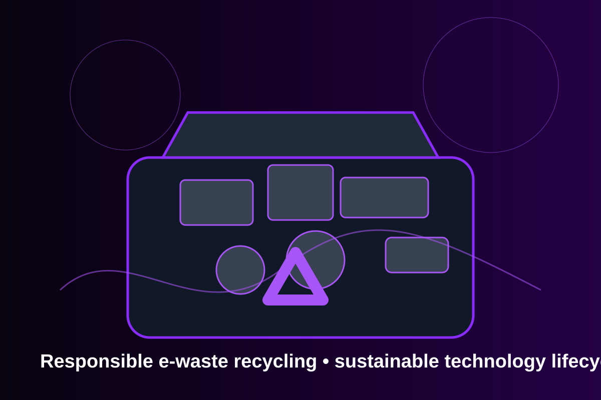
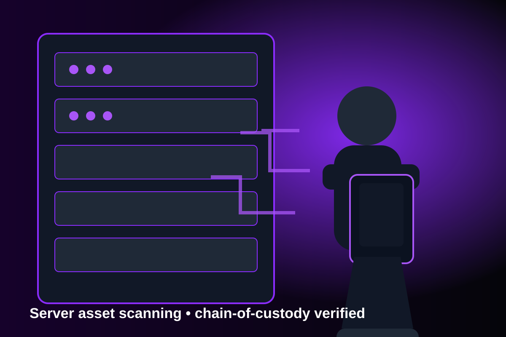

Asset Recovery
Maximize the value of your retired technology through secure remarketing and reuse strategies.

Transition TeksSmarter solutions. Secure futures.
We help organizations responsibly manage technology from acquisition to end-of-life through secure, sustainable, and data-driven ITAD services.
Comprehensive ITAD Services
From secure data destruction to responsible recycling, we deliver end-to-end IT asset disposition services tailored to your needs.

Maximize the value of your retired technology through secure remarketing and reuse strategies.

Secure and certified data destruction you can trust.

Environmentally sound recycling and remarketing that supports a circular economy.

Expert guidance to help you manage risk and stay secure.
Our Process
A proven process that protects your data, reduces risk, and delivers measurable results.
See Our Process →We evaluate your assets and define the right solution.
Secure logistics and chain-of-custody from your location.
Assets are tested, data wiped, shredded, or refurbished.
Detailed reporting and certificates for transparency.
Responsible Recycling
We ensure technology is recycled responsibly—reducing e-waste, conserving resources, and protecting our planet.
Learn More →Industries We Serve
Complex IT environments and global operations.
Protecting patient data and ensuring compliance.
Secure ITAD for highly regulated industries.
Trusted ITAD solutions for public sector.
Let’s build a smarter, more secure future for your organization.